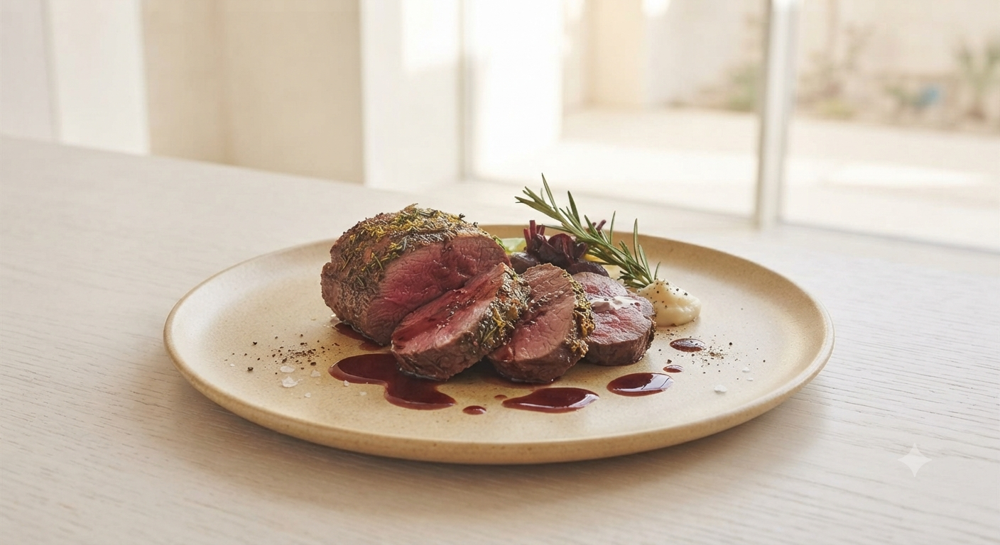
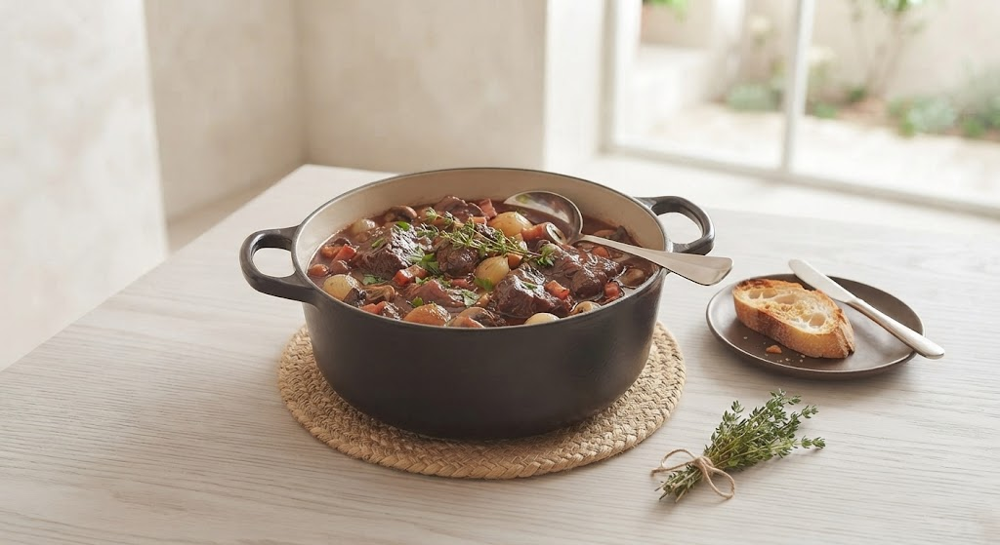
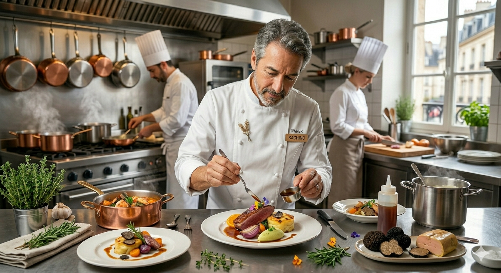

フランス二つ星の厨房で培った伝統の技。
山形の地が育んだ力強い赤ワインで、
箸で解けるほど丁寧に、時間を忘れて煮込みました。
それは、記憶に残る一皿。

山形に生まれ、東京、そして本場フランスへ。二つ星の称号を持つ名店での研鑽を経て、2015年パテ・アン・クルート世界大会にて特別賞を拝受いたしました。
2016年、愛する山形の地に「ル シェル ブルー」を構えたのは、格調高いフレンチを、ご夫妻やご友人と肩肘張らずに楽しんでいただきたかったからです。
一皿ごとに、旅をするような驚きと、実家に帰ったような安らぎを。
「美味しい」の先にある、お客様との対話を大切にしています。
〜 シェフ特選 レトルト＆ギフトコレクション 準備中 〜
地元の素材の旨みをあますことなく閉じ込めた、からだにやさしいフレンチスープ。温めるだけで贅沢な朝食や一皿に。
当店の名物・牛すね肉のコクをベースに、フォンドヴォーと数種のスパイスで仕立てた大人向けの極上カレー。
「遠方のお客様にもお店の味を届けたい」という想いから、現在心を込めて開発を進めております。販売開始につきましては、決定次第公式Facebook等にてご案内いたします。
Stay tuned for updates.「こんなに居心地の良いフレンチは初めてでした」
2時間ちょっとの贅沢な時間。シェフも奥様も気さくで、本格料理をアットホームに楽しめました。駐車場があるのも嬉しいです。
「シェフとの会話が、料理をさらに美味しくする」
カウンター越しにマスターとの会話が弾みます。野菜好きな私に地元の情報を教えてくれるなど、心温まるひとときでした。
〒999-3164
山形県上山市朝日台1丁目1-22
※駐車場完備（朝日台の静かな住宅街にございます）
ご予約時に「サイトを見た」とお伝えください。
シェフ厳選の「本日のおすすめ小皿」をサービスいたします。
Closed: Wednesday